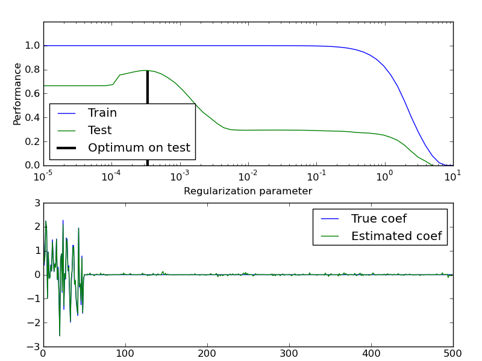

Train error vs Test error¶
Illustration of how the performance of an estimator on unseen data (test data) is not the same as the performance on training data. As the regularization increases the performance on train decreases while the performance on test is optimal within a range of values of the regularization parameter. The example with an Elastic-Net regression model and the performance is measured using the explained variance a.k.a. R^2.
Script output:
Optimal regularization parameter : 0.000335292414925
Python source code: plot_train_error_vs_test_error.py
print __doc__
# Author: Alexandre Gramfort <alexandre.gramfort@inria.fr>
# License: BSD Style.
import numpy as np
from sklearn import linear_model
###############################################################################
# Generate sample data
n_samples_train, n_samples_test, n_features = 75, 150, 500
np.random.seed(0)
coef = np.random.randn(n_features)
coef[50:] = 0.0 # only the top 10 features are impacting the model
X = np.random.randn(n_samples_train + n_samples_test, n_features)
y = np.dot(X, coef)
# Split train and test data
X_train, X_test = X[:n_samples_train], X[n_samples_train:]
y_train, y_test = y[:n_samples_train], y[n_samples_train:]
###############################################################################
# Compute train and test errors
alphas = np.logspace(-5, 1, 60)
enet = linear_model.ElasticNet(rho=0.7)
train_errors = list()
test_errors = list()
for alpha in alphas:
enet.set_params(alpha=alpha)
enet.fit(X_train, y_train)
train_errors.append(enet.score(X_train, y_train))
test_errors.append(enet.score(X_test, y_test))
i_alpha_optim = np.argmax(test_errors)
alpha_optim = alphas[i_alpha_optim]
print "Optimal regularization parameter : %s" % alpha_optim
# Estimate the coef_ on full data with optimal regularization parameter
enet.set_params(alpha=alpha_optim)
coef_ = enet.fit(X, y).coef_
###############################################################################
# Plot results functions
import pylab as pl
pl.subplot(2, 1, 1)
pl.semilogx(alphas, train_errors, label='Train')
pl.semilogx(alphas, test_errors, label='Test')
pl.vlines(alpha_optim, pl.ylim()[0], np.max(test_errors),
color='k', linewidth=3, label='Optimum on test')
pl.legend(loc='lower left')
pl.ylim([0, 1.2])
pl.xlabel('Regularization parameter')
pl.ylabel('Performance')
# Show estimated coef_ vs true coef
pl.subplot(2, 1, 2)
pl.plot(coef, label='True coef')
pl.plot(coef_, label='Estimated coef')
pl.legend()
pl.subplots_adjust(0.09, 0.04, 0.94, 0.94, 0.26, 0.26)
pl.show()